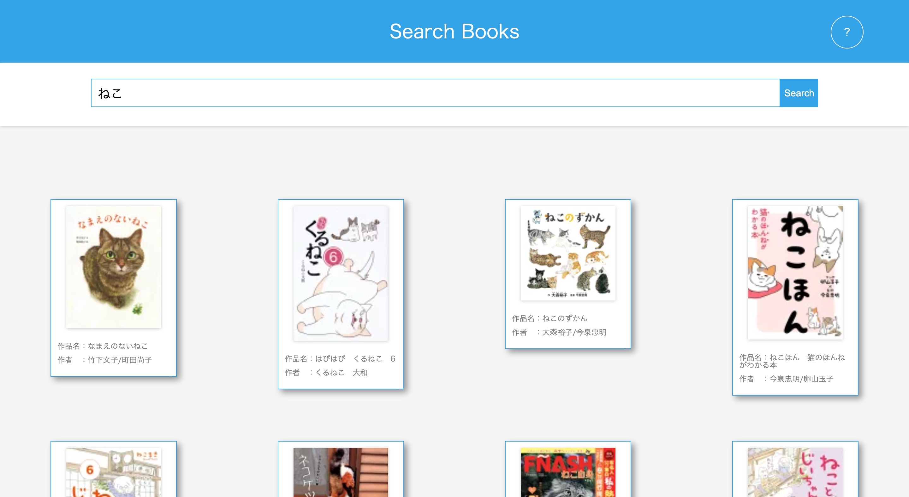

Fumiaki's portfolio
Welcome to my portfolio site!
About me
Kitagawa Fumiaki
高校卒業後、京都外国語専門学校の英米語学科に進学し2018年に卒業しました。その後、大阪デザイナー専門学校に進学し、グラフィックデザイン学科に進学しましたが家庭の事情で2018年9月に中途退学しています。
現在はTECH::EXPERTで学んだプログラミングの知識を生かして、フロントエンドエンジニア・コーダーとして経験を積んでいきたいと考えています。
My works
-

- 
-

My skills
フロントエンド
- HTML5/CSS3
- Sass/scss
- Javascript
- jQuery
- Gulp
- Webpack
バックエンド
- Ruby
- Ruby on Rails
- Node.js
インフラ
- AWS(EC2・S3)
- Heroku
ツール
- Slack
- Github
- Trello
- Visual Studio Code
- sourcetree/Github Desktop
フロントエンドの勉強を中心にしています。まだまだ経験が浅いので全体的なスキルレベルは高いとは言えませんが、HTML/CSSやjavascript/jQueryなどのスキルレベルを高める事を一番の目標にしつつ、将来より開発へ貢献するためにwebpackやgulpなどへの理解も深めていこうと考えています。